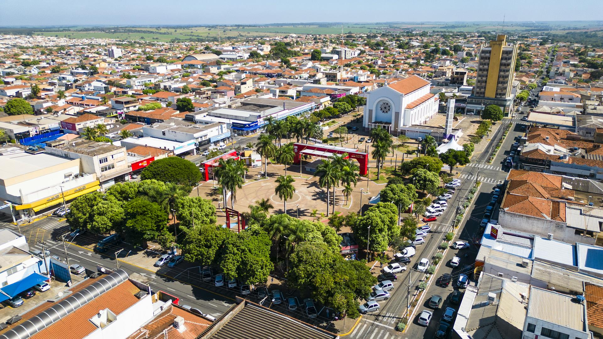

Um pouco de história
Fernandópolis surgiu da união de dois povoados vizinhos: Vila Pereira (fundada por Joaquim Antônio Pereira) e Brasilândia (fundada por Carlos Barozzi). Em 1943, durante uma visita à região, o interventor estadual Dr. Fernando Costa sugeriu a fusão das duas vilas em um único município. Em sua homenagem, a nova cidade foi batizada de Fernandópolis, tornando-se também conhecida como a Cidade das Águas Quentes devido às suas fontes de águas termais.

Pontos turísticos
- Água Viva Thermas Clube
- Igreja Matriz Santa Rita de Cássia
- Museu Histórico Municipal Carlos Barozzi
- Praça Central Joaquim Antônio Pereira